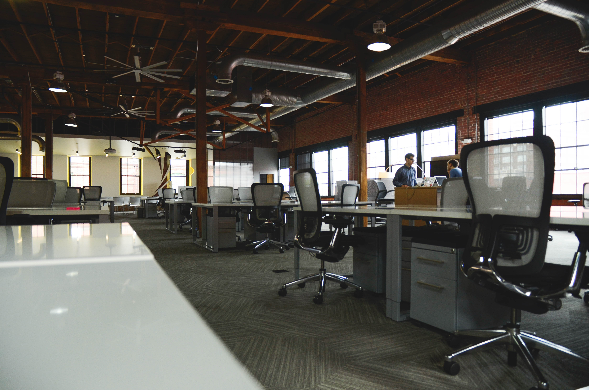

Objetivos y acciones para logralo

Objetivo:
Ser una empresa de ayuda organizada que pueda hacer el mejor manejo y mantenimiento
de los equipos de computo logrando la satisfaccion del personal del docente
Ser una empresa de ayuda organizada que pueda hacer el mejor manejo y mantenimiento
de los equipos de computo logrando la satisfaccion del personal del docente
Accion para logralo:
Lo primero que debemos saber cada integrante es que cada cosa que hagamos tendra una influencia ya sea buena o mala en el personal docente por eso es bueno ir
preparados tanto fiscicamente como mentalmente y pensar lo que vamos a hacer en cada accion sobre si lo que vamos a realizar hara que el
personal quede satisfecho o no.

Objetivo:
Alacanzar el reconocimiento de los medios como una excelente mesa de ayuda, siendo ameritados por los trabajos y servicios
Alacanzar el reconocimiento de los medios como una excelente mesa de ayuda, siendo ameritados por los trabajos y servicios
Accion para logralo:
Lo mas importante es el trabajo en equipo para generar un impacto positivo en el docente.Si cada quien colabora unanimemente sera mas facil que los directivos del
planten tomen enserio nuestro trabajo y recibamos un reconocimiento completo en el plantel.

Objetivo:
Lograr que el personal de docente adquieran seguridad, confianza, comodidad y aprecio por esta mesa de ayuda "Tree Computers"
poniendo en practica los valores y principios que nos caracterizan
Lograr que el personal de docente adquieran seguridad, confianza, comodidad y aprecio por esta mesa de ayuda "Tree Computers" poniendo en practica los valores y principios que nos caracterizan
Accion para logralo:
Para que nuestros superiores nos brinden confianza tenemos que hacer desde lo mas simple como un buen peinado, aseo personal o vestimenta hasta la estancia
en su lugar de trabajo pues si esas personas observan a un integrante con valores y etica (esto implica el lenguaje respetuoso y amable, aptitud y actitud)
sera casi seguro que nos brinden de nuevo su confianza.

Objetivo:
Usar todos los medios y conocimientos estudiados, para evitar fallas, malentendidos y daños al reparar, solucionar, configurar, etc, un equipo de computo y asi evitar
una mancha al historial de la mesa de ayuda
Usar todos los medios y conocimientos estudiados, para evitar fallas, malentendidos y daños al reparar, solucionar, configurar, etc, un equipo de computo y asi evitar una mancha al historial de la mesa de ayuda
Accion para logralo:
Para lograrlo debemos hacer algo similar a lo del objetivo 1 saber a lo que vamos teniendo el conocimento que tenemos e iremos aprendiendo sobre la marcha para eso
eso seria de gran utilidad estudiar a fondo las fallas que sabemos que podemos darle solucion

Objetivo:
Impactar de forma positiva a los medios, dejando en claro el lema de la mesa de ayuda y dar realze a la especialidad de soporte y mantenimiento de equipo de computo o promoviendo
y realizando trabajos y servicios de calidad
Impactar de forma positiva a los medios, dejando en claro el lema de la mesa de ayuda y dar realze a la especialidad de soporte y mantenimiento de equipo de computo o promoviendo y realizando trabajos y servicios de calidad